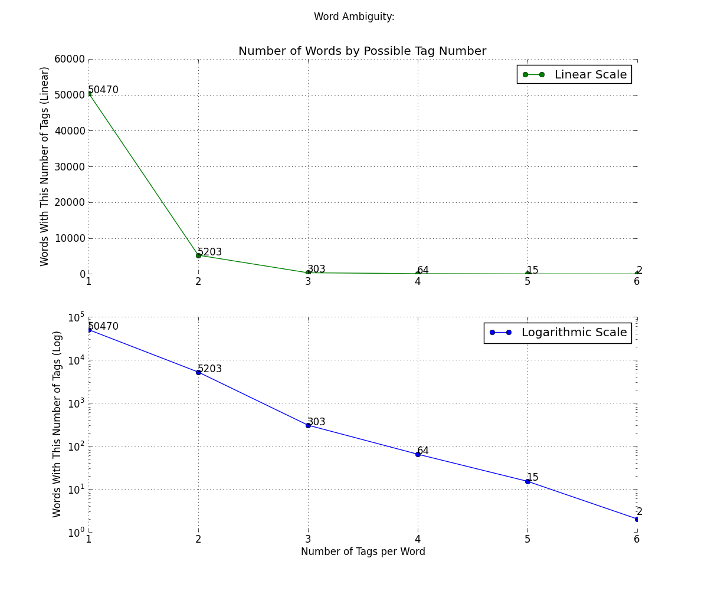
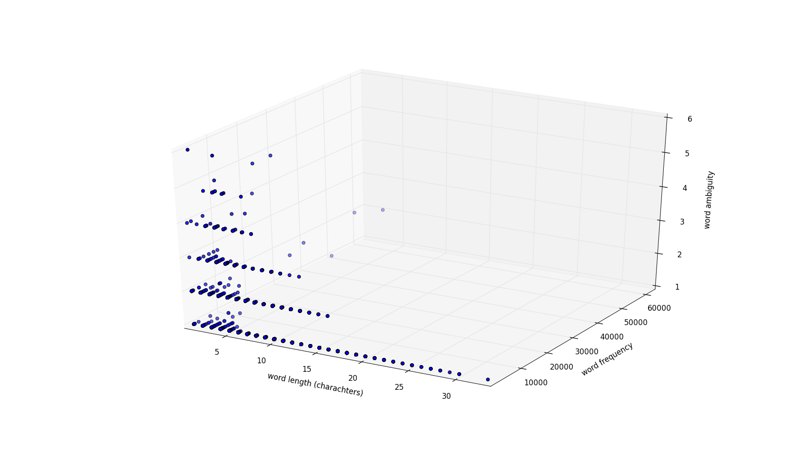
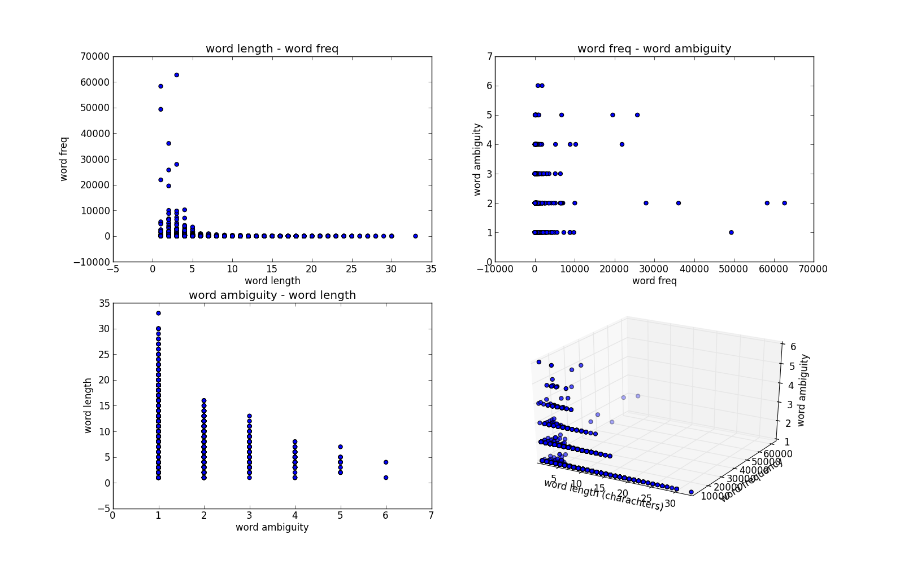
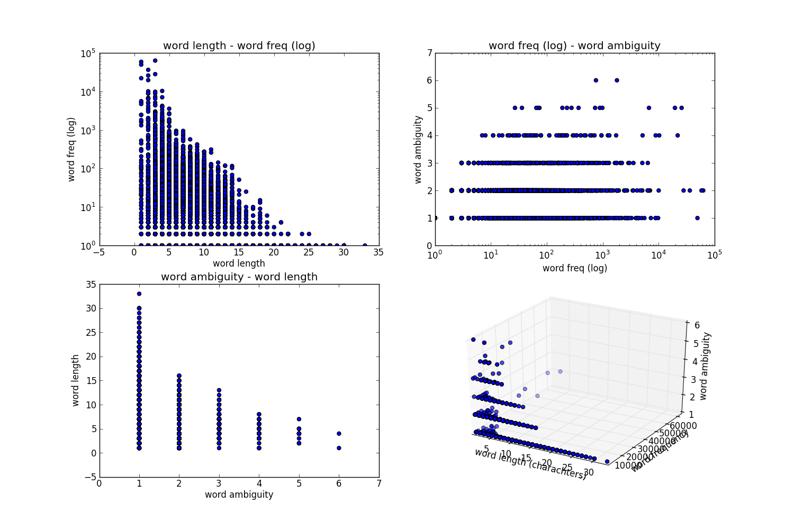

NLP12 Assignment 1: Parts of Speech Tagging
Table of Contents
NOTES: In this assignment, the new "requests" python library was used,
and not urllib, as suggested in the tutorial. The web (and python)
have evolved since python 2.5, used in the nltk book, was released
in 2008.
Additionally, since xgoogle seemed to return very few results (1-3 on
most searches), I used this script instead.
1 Data Exploration [1/2]
1.1 Gathering and cleaning up data
- Errors met while dealing with the Google engine:
Using the xgoogle library, only produced 1-3 result URLs for the searches, so I tried several alternatives: the python-duckduckgo library, but this only produced 1 result per query (duckduckgo only supplies a 'zero-click' api). Eventually, I used this script, which worked perfectly. - Errors met while downloading the material from the Google hits:
I had no trouble, and was using the "requests" library. - Errors met while cleaning up the HTML pages:
The built-innltk.clean_htmlfunction did only a mediocre job cleaning the contents of the web pages, leaving in some irrelevant strings. Using the justext library worked perfectly. - Errors met while segmenting the text into sentences and words:
Headlines were not segmented in to different sentences, but were instead included in the following sentence. The em-dash (represented as "- -", without spaces) was not regarded as separating between words when it should have been. For example, in: "sliding/N movement- -the/DET days/N of/P heaving/VG" we can see the words 'movement' and 'the' not separated. - Errors met by the automatic tagger:
When fed sentences that were correctly segmented to to words, and were also complete, and valid - I had no corrections to offer. Perhaps it's my lack of competence as a tagger for English words..
1.1.1 Manual Tagging:
Review the tagging of the new text separately (2 analyses) and compare your tagging results. Report the list of words on which your 2 manual tagging decisions are different (write a function to compare two taggings of the same text saved in 2 different tagged files.) Show the differences between each of your tags and the tags produced by the automatic tagger. Report how long it took you to check the tagging of 50 sentences.
This is the code I used:
from cPickle import dump
import justext
import nltk
import requests
from google import search
def main():
pages_used = 0
for url in search('aeron chair', stop=30):
text = ""
url_used = False
html = requests.get(url).content
paragraphs = justext.justext(html, justext.get_stoplist('English'))
for paragraph in paragraphs:
if paragraph['class'] == 'good':
if not url_used:
url_used = True
pages_used += 1
text += (paragraph['text'] + '\n')
if url_used:
print 'now analyzing text from: {}'.format(url)
rawfile = 'rawfile_{}.txt'.format(pages_used)
with file(rawfile, 'wb') as f:
f.write(text) # save raw text to file
sent_tokenizer = nltk.data.load('tokenizers/punkt/english.pickle')
sents = sent_tokenizer.tokenize(text)
sentsfile = 'sentsfile_{}.pkl'.format(pages_used)
dump(sents, file(sentsfile, 'wb'), protocol=2) # pickle the sentences to a file
tokenized_sents = []
tokenized_sents += [nltk.word_tokenize(sent) for sent in sents]
tokfile = 'tokfile_{}.pkl'.format(pages_used)
dump(tokenized_sents, file(tokfile, 'wb'), protocol=2) # pickle the tokenized_sents to a file
tagged_sents = [_tag(sent) for sent in tokenized_sents]
tagged_text = ""
for sent in tagged_sents:
tagged_text += ('\n\n\t' + # sentence seperator
# create whitespace-separated 'word/tag' sentences
' '.join(['/'.join(word_tag_tuple) for word_tag_tuple in sent]) +
'\n') # newline after sentence
corpfile = 'corpfile_{}.txt'.format(pages_used)
with file(corpfile, 'wb') as f:
f.write(tagged_text)
return 0
def _tag(sent):
"""
This is taken from http://goo.gl/TxTyq (short for
stackoverflow.com/...) with minor changes.
This function returns the inputed 'sent' as tagged by nltk.pos_tag
converted to Brown simplified tags.
"""
from nltk.tag.simplify import simplify_brown_tag
tagged_sent = nltk.pos_tag(sent)
simplified = [(word, simplify_brown_tag(tag)) for word, tag in tagged_sent]
return simplified
if __name__ == '__main__':
main()
1.2 Gathering basic statistics
To create Figure 1:

Figure 1
I used the following code:
from __future__ import division
from collections import defaultdict, Counter
from itertools import combinations
import nltk
import pylab
def PlotNumberOfTags(corpus):
word_tag_dict = defaultdict(set)
for (word, tag) in corpus:
word_tag_dict[word].add(tag)
C = Counter(len(val) for val in word_tag_dict.itervalues())
pylab.subplot(211)
pylab.plot(C.keys(), C.values(), '-go', label='Linear Scale')
pylab.suptitle('Word Ambiguity:')
pylab.title('Number of Words by Possible Tag Number')
pylab.box('off') # for better appearance
pylab.grid('on') # for better appearance
pylab.ylabel('Words With This Number of Tags (Linear)')
pylab.legend(loc=0)
pylab.subplot(212)
pylab.plot(C.keys(), C.values(), '-bo', label='Logarithmic Scale')
pylab.yscale('log') # to make the graph more readable, for the log graph version
pylab.box('off') # for better appearance
pylab.grid('on') # for better appearance
pylab.xlabel('Number of Tags per Word')
pylab.ylabel('Words With This Number of Tags (Log)')
pylab.legend(loc=0)
For the requested functions, This code was used:
def MostAmbiguousWords(corpus, N):
word_tag_dict = defaultdict(set)
for (word, tag) in corpus:
word_tag_dict[word].add(tag)
filtered_tagged_words = [(word, tag) for (word, tag) in corpus if len(word_tag_dict[word]) > N]
return nltk.ConditionalFreqDist(filtered_tagged_words)
def TestMostAmbiguousWords(cfd, N):
all_good = True
for word in cfd.conditions():
all_good &= (len(cfd[word]) > N)
if all_good:
print 'All words occur with more than {} tags.'.format(N)
else:
print 'ERROR: Some words occur with less (or exactly) {} tags'.format(N)
def ShowExamples(word, cfd, corpus):
for tag in cfd[word].keys():
print '\'{}\' as {}: {}\n'.format(word, tag, example(word, tag, corpus))
def example(word, tag, corpus):
idx = corpus.index((word, tag))
sent = corpus[idx-10:idx] + [(word.upper(), tag)] + corpus[idx+1:idx+11]
return ' '.join(word for (word, tag) in sent)
1.3 Is there a correlation between word size or frequency and ambiguity level?
To try and answer this question, I plotted the requested 3D graph (figure 2a):

Figure 2a
In order to better understand it, I also looked at the 3 2D Projections of it (figure 2b), and used a logarithmic scale for word frequency (figure 3c):

Figure 2b

Figure 2c
Two correlations are clearly visible: word frequency - word length (as
discussed in class, due to "evolution" maybe), and word ambiguity - word length (probably not a strictly linear correlation).
It looks probable, that there is also some correlation between word ambiguity - word frequency, however, it's difficult to decide whether
this correlation will exist after taking into account the previous two
correlation, since they appear to be much more significant.
It is also worth noting that all these observations were made with
only looking at the graphs, and might be wrong when tested for
statistical significance.
This is the code used (with minor changes or commenting out, to create the different graphs):
def correl_plot3D(corpus):
from mpl_toolkits.mplot3d import Axes3D
word_tag_dict = defaultdict(set)
for (word, tag) in corpus:
word_tag_dict[word].add(tag)
raw_wordlist = [word for (word, tag) in corpus]
wordset = set(raw_wordlist)
wordlist = list(wordset)
word_fd = nltk.FreqDist(raw_wordlist)
fig = pylab.figure(figsize=(15,15))
ax = fig.add_subplot(224, projection='3d') # 224
xs = [len(w) for w in wordlist]
ys = [word_fd[w] for w in wordlist]
zs = [len(word_tag_dict[w]) for w in wordlist]
ax.scatter(xs, ys, zs)
ax.set_xlabel('word length (charachters)')
ax.set_ylabel('word frequency')
ax.set_zlabel('word ambiguity')
pylab.subplot(221)
pylab.yscale('log')
pylab.ylim(ymin=1, ymax=100000)
pylab.scatter(xs, ys)
pylab.title('word length - word freq (log)')
pylab.xlabel('word length')
pylab.ylabel('word freq (log)')
pylab.subplot(222)
pylab.xscale('log')
pylab.xlim(xmin=1, xmax=100000)
pylab.scatter(ys, zs)
pylab.title('word freq (log) - word ambiguity')
pylab.xlabel('word freq (log)')
pylab.ylabel('word ambiguity')
pylab.subplot(223)
pylab.scatter(zs, xs)
pylab.title('word ambiguity - word length')
pylab.xlabel('word ambiguity')
pylab.ylabel('word length')
pylab.show()